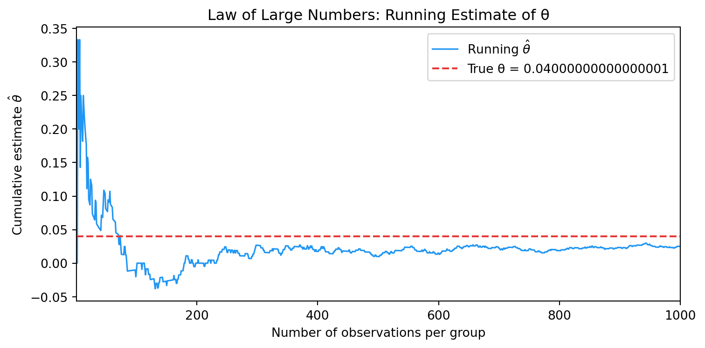
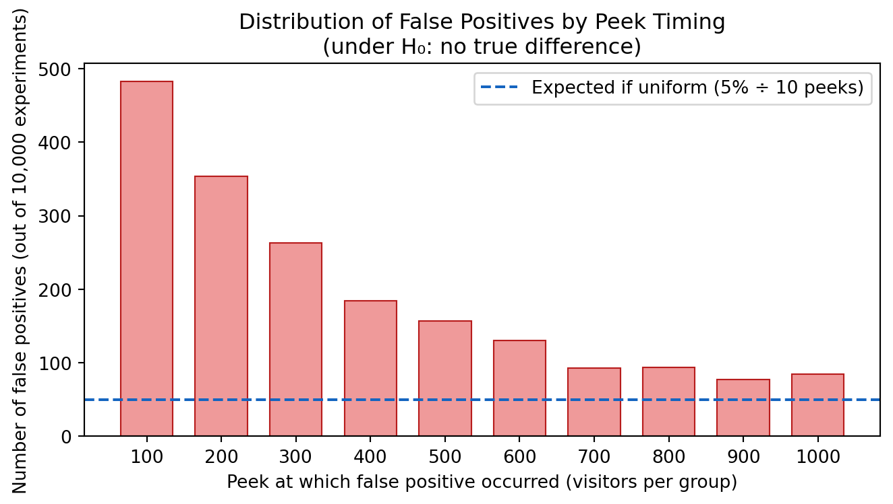

Simulating Key Ideas from Classical Frequentist Statistics
Author
Abdullah Aljarallah
Published
April 15, 2026
Introduction
Imagine you run a website with a newsletter sign-up form on the landing page. You have two candidate “calls to action” (CTAs) — the small piece of text that invites visitors to subscribe:
CTA A: “Sign up for our newsletter here!”
CTA B: “Stay up to date by signing up!”
You want to know which phrasing actually converts more visitors into subscribers, but you cannot simply show everyone the same CTA and compare across time — too many other things change day to day. Instead, you run an A/B test: every visitor is randomly assigned to see either CTA A or CTA B, and you compare the resulting sign-up rates between the two groups. Randomization is the key ingredient — it ensures that the two groups are, on average, identical in every way except the CTA they see, so any difference in sign-up rates can be attributed to the CTA itself.
The sections that follow build up the statistical machinery needed to analyze this test rigorously, using simulation to make abstract ideas concrete.
The A/B Test as a Statistical Problem
When a visitor lands on your page, they either sign up (outcome = 1) or they do not (outcome = 0). This binary outcome is naturally modeled as a Bernoulli random variable: each visitor is an independent draw from a Bernoulli distribution with some sign-up probability \(\pi\).
Because the CTA a visitor sees might influence whether they sign up, we allow this probability to differ across groups:
Visitors assigned to CTA A have sign-up probability \(\pi_A\).
Visitors assigned to CTA B have sign-up probability \(\pi_B\).
The quantity we care about is the difference in sign-up rates:
\[\theta = \pi_A - \pi_B\]
A positive \(\theta\) means CTA A converts better; a negative \(\theta\) means CTA B is superior; \(\theta = 0\) means the two CTAs are equally effective.
Since we cannot observe \(\pi_A\) and \(\pi_B\) directly, we estimate \(\theta\) using the difference in sample proportions:
\[\hat{\theta} = \bar{X}_A - \bar{X}_B\]
where \(\bar{X}_A\) is the fraction of CTA A visitors who signed up (i.e., \(\hat{\pi}_A\)) and \(\bar{X}_B\) is the fraction of CTA B visitors who signed up (i.e., \(\hat{\pi}_B\)). Because each observation is 0 or 1, the sample mean and the sample proportion are exactly the same thing.
Simulating Data
Code
import numpy as npimport pandas as pdimport matplotlib.pyplot as pltfrom scipy import statsimport statsmodels.api as sm# One independent seed per section so each section is reproducible on its own# and changing one section's seed never disturbs any other section's results.rng_main = np.random.default_rng(42) # data simulationrng_boot = np.random.default_rng(43) # bootstraprng_clt = np.random.default_rng(44) # CLT histogramsrng_peek = np.random.default_rng(45) # peeking simulation# True parameterspi_A =0.22pi_B =0.18theta_true = pi_A - pi_B # 0.04n =1000# Simulate 1,000 draws from each groupdata_A = rng_main.binomial(1, pi_A, n)data_B = rng_main.binomial(1, pi_B, n)print(f"True θ : {theta_true:.4f}")print(f"Sample mean A : {data_A.mean():.4f}")print(f"Sample mean B : {data_B.mean():.4f}")print(f"Estimated θ̂ : {data_A.mean() - data_B.mean():.4f}")
True θ : 0.0400
Sample mean A : 0.2240
Sample mean B : 0.1990
Estimated θ̂ : 0.0250
In real life we would never know \(\pi_A\) or \(\pi_B\) — that is the whole point of running the experiment. Here, however, we set the true values (\(\pi_A = 0.22\), \(\pi_B = 0.18\), \(\theta = 0.04\)) so that we can study how well our estimator recovers them. Think of this as a controlled experiment about our statistical procedure itself. With the ground truth in hand, we can check whether our estimates are close to the right answer, how much they vary across hypothetical repetitions of the experiment, and when they might mislead us.
The Law of Large Numbers
The Law of Large Numbers (LLN) states that, as the sample size grows, the sample mean converges to the population mean. In our setting this means \(\bar{X}_A \to \pi_A\) and \(\bar{X}_B \to \pi_B\), and therefore \(\hat{\theta} = \bar{X}_A - \bar{X}_B \to \theta\). The LLN is the foundational reason we trust our estimator: given enough data, it will be close to the truth.
To see this in action, we use the 1,000 pairs of observations already simulated. For each observation \(i\), define \(D_i = X_{A,i} - X_{B,i}\) (the difference for that pair). The cumulative average of \(D_1, D_2, \ldots, D_n\) is just our running estimate of \(\theta\) after \(n\) observations.
Code
# Element-wise differences and their running meandiffs = data_A - data_Bcumulative_mean = np.cumsum(diffs) / np.arange(1, n +1)fig, ax = plt.subplots(figsize=(8, 4))ax.plot(np.arange(1, n +1), cumulative_mean, color="#2196F3", lw=1.2, label=r"Running $\hat{\theta}$")ax.axhline(theta_true, color="#E53935", lw=1.5, ls="--", label=f"True θ = {theta_true}")ax.set_xlabel("Number of observations per group")ax.set_ylabel(r"Cumulative estimate $\hat{\theta}$")ax.set_title("Law of Large Numbers: Running Estimate of θ")ax.legend()ax.set_xlim(1, n)plt.tight_layout()plt.savefig("lln_plot.png", dpi=150)plt.show()

The plot illustrates the LLN at work. With only a handful of observations, the running estimate swings wildly — a few sign-ups or non-sign-ups can push the average far from the truth. As the sample size grows, random fluctuations average out and the estimate settles in close to the true value of \(\theta = 0.04\). By \(n = 1{,}000\) the estimate has converged near the red dashed line. This is exactly the guarantee the LLN provides: not that any single estimate is right, but that sufficiently large samples will be close to right.
Bootstrap Standard Errors
Knowing that \(\hat{\theta}\) converges to \(\theta\) is reassuring, but it does not tell us how precise our estimate is for the particular sample size we have. We need a standard error — a measure of how much \(\hat{\theta}\) would vary if we were to repeat the experiment many times.
The bootstrap gives us this without requiring any closed-form formula. The idea is to treat our observed data as a stand-in for the population and repeatedly re-sample from it with replacement. Each resample mimics a hypothetical repetition of the experiment. We compute \(\hat{\theta}^*\) on each resample, and the standard deviation of those resampled estimates is our bootstrap standard error.
Code
B =1000# number of bootstrap resamplesboot_estimates = np.empty(B)for b inrange(B):# Resampling within each group independently to preserve fixed group sizes resample_A = rng_boot.choice(data_A, size=n, replace=True) resample_B = rng_boot.choice(data_B, size=n, replace=True) boot_estimates[b] = resample_A.mean() - resample_B.mean()se_boot = boot_estimates.std(ddof=1)# Analytical SEpi_hat_A = data_A.mean()pi_hat_B = data_B.mean()se_analytical = np.sqrt(pi_hat_A * (1- pi_hat_A) / n + pi_hat_B * (1- pi_hat_B) / n)import pandas as pd# 95% confidence interval using bootstrap SEtheta_hat = pi_hat_A - pi_hat_Bci_lower = theta_hat -1.96* se_bootci_upper = theta_hat +1.96* se_boot# SE comparison tablese_table = pd.DataFrame({"Method": ["Bootstrap", "Analytical Formula"],"Standard Error": [round(se_boot, 5), round(se_analytical, 5)],})display(se_table.style .set_caption("Standard Error Comparison") .hide(axis="index") .format({"Standard Error": "{:.5f}"}))# Point estimate and CI tableci_table = pd.DataFrame({"Point Estimate (θ̂)": [round(theta_hat, 4)],"95% CI Lower": [round(ci_lower, 4)],"95% CI Upper": [round(ci_upper, 4)],})display(ci_table.style .set_caption("Point Estimate and 95% Confidence Interval") .hide(axis="index") .format("{:.4f}"))
Table 1: Standard Error Comparison
Method
Standard Error
Bootstrap
0.01892
Analytical Formula
0.01825
Table 2: Point Estimate and 95% Confidence Interval
Point Estimate (θ̂)
95% CI Lower
95% CI Upper
0.0250
-0.0121
0.0621
The bootstrap standard error and the analytical standard error are nearly identical — a reassuring sign that both approaches are capturing the same underlying variability. The small difference arises from simulation randomness (the bootstrap uses a finite number of resamples).
Interpreting the confidence interval: Our 95% confidence interval for \(\theta\) runs from -0.012 to 0.062. The classical interpretation is: if we were to repeat this entire procedure (data collection + interval construction) many times, about 95% of the resulting intervals would contain the true \(\theta\). For this particular interval: it includes zero, which means we cannot rule out the possibility that the two CTAs produce identical sign-up rates. At the same time, the interval also includes meaningful positive values (up to ~0.06), so a real advantage for CTA A remains plausible. Every value inside the interval is at least reasonably compatible with the data given the assumptions used; the point estimate of 0.025 is the single most compatible value. This is a good illustration of why reporting the full interval matters more than a binary significant/not-significant verdict.
The Central Limit Theorem
The Central Limit Theorem (CLT) is one of the most important results in statistics. It says that regardless of the shape of the underlying population distribution — even a Bernoulli — the sampling distribution of the sample mean becomes approximately Normal as the sample size grows. Because \(\hat{\theta}\) is the difference of two sample means, this applies to our estimator as well:
To visualize this, we repeat the experiment 1,000 times at four different sample sizes (\(n \in \{25, 50, 100, 500\}\)), plot a histogram of the resulting \(\hat{\theta}\) values, and overlay the Normal approximation.
At \(n = 25\), the histogram is lumpy, gappy, and asymmetric — this is not just noise. With only 25 Bernoulli observations per group, the sample proportion \(\hat{\pi}\) can only take on a discrete set of values (0, 1/25, 2/25, …, 1), which means \(\hat{\theta}\) is also constrained to a finite grid of possible values rather than a continuous range. This discreteness is what creates the spiky, comb-like appearance. By \(n = 100\) the grid of possible values is fine enough that the histogram looks roughly continuous and the bell shape is unmistakable, and by \(n = 500\) the histogram hugs the Normal curve almost perfectly. Notice also that the spread of the distribution shrinks as \(n\) increases, which reflects the fact that larger samples yield more precise estimates. This is the CLT in action: the distribution of \(\hat{\theta}\) becomes approximately Normal as sample sizes grow, regardless of the underlying Bernoulli distribution.
Hypothesis Testing
Equipped with the CLT, we can now perform a formal hypothesis test. We frame the question as a competition between two hypotheses:
Null hypothesis\(H_0: \theta = 0\) — the two CTAs produce identical sign-up rates.
Alternative hypothesis\(H_1: \theta \neq 0\) — the CTAs differ.
We do not start by trying to prove that CTA A is better; we start by asking whether the data are inconsistent with the world where there is no difference at all.
Building the test statistic. By the CLT, \(\hat{\theta}\) is approximately Normal for large samples. Under \(H_0\) its mean is 0. If we divide by the standard error, we obtain a quantity that follows a standard Normal distribution under \(H_0\):
This standardization is crucial: it means we know exactly what distribution \(z\) should follow if the null were true, which lets us compute a p-value — the probability of observing a test statistic at least as extreme as ours if \(H_0\) were true.
A note on “t-test” terminology. In introductory courses this procedure is often called a t-test. Strictly, the t-distribution arises when the data are drawn from a Normal distribution and the variance is estimated from the data — the ratio then follows an exact t-distribution. Our data are Bernoulli, not Normal, so no exact t-distribution result applies; we rely on the CLT for approximate Normality. In practice, for \(n = 1{,}000\) the t-distribution with ~999 degrees of freedom is essentially indistinguishable from the standard Normal, so the distinction has no practical consequence here — but it matters conceptually.
With \(z \approx\) 1.37 and a p-value of 0.1708, we fail to reject \(H_0\) at any conventional significance level (e.g., \(\alpha = 0.05\) or \(\alpha = 0.10\)). A p-value of 0.17 means: if there were truly no difference between the CTAs, we would observe a test statistic this extreme or more extreme about 17% of the time just by chance. That is not rare enough to be convincing evidence against the null.
However — and this is a point the McShane et al. reading emphasizes — failing to reject \(H_0\) is not the same as proving that no difference exists. Our point estimate of \(\hat{\theta} =\) 0.025 is positive and in the direction we expected (CTA A performing better). The 95% confidence interval spans from -0.012 to 0.062, which includes zero but also includes effect sizes that would be practically meaningful. A larger sample would give us the precision needed to distinguish between “truly no effect” and “a small but real effect.” Reporting the point estimate and interval alongside the p-value gives a much fuller picture than a binary reject/fail-to-reject verdict.
The T-Test as a Regression
The two-sample test above turns out to be mathematically equivalent to a simple linear regression — a connection that is both elegant and practically useful.
Setup. Stack the CTA A and CTA B observations into a single dataset with two columns: \(Y_i\) (1 if visitor \(i\) signed up, 0 otherwise) and \(D_i\) (1 if visitor \(i\) saw CTA A, 0 for CTA B). Fit the regression:
\[Y_i = \beta_0 + \beta_1 D_i + \varepsilon_i.\]
Coefficient interpretation:
When \(D_i = 0\) (CTA B group), \(\mathbb{E}[Y_i] = \beta_0\), so \(\beta_0 = \pi_B\) and \(\hat{\beta}_0 = \hat{\pi}_B\).
When \(D_i = 1\) (CTA A group), \(\mathbb{E}[Y_i] = \beta_0 + \beta_1\), so \(\beta_0 + \beta_1 = \pi_A\).
Therefore \(\beta_1 = \pi_A - \pi_B = \theta\), and the OLS estimate \(\hat{\beta}_1 = \bar{X}_A - \bar{X}_B = \hat{\theta}\).
The slope coefficient is exactly our treatment effect estimator. In the software output, const is \(\hat{\beta}_0\), which estimates the baseline conversion rate of the control group (CTA B): 0.1990.
Table 4: Two-Sample Test vs. OLS Regression — Side-by-Side
Method
Estimate
Std. Error
Test Statistic
P-Value
Two-sample z-test
0.0250
0.01825
1.370
0.1708
OLS (β̂₁)
0.0250
0.01826
1.369
0.1712
The regression coefficient on \(D_i\) equals \(\hat{\theta}\) from the two-sample calculation — they are numerically the same. The standard errors and p-values are nearly identical (a tiny difference can arise because OLS assumes a single pooled error variance across both groups, while our two-sample formula allows separate variances per group; with \(n = 1{,}000\) per group this difference is negligible).
Why does this equivalence matter? The regression framework is far more general. Need to control for visitor characteristics (device type, time of day)? Add them as covariates. Testing three CTAs instead of two? Add indicator variables. Checking whether the treatment effect differs by country? Add an interaction term. In all these cases the underlying machinery — and the software — is identical. Seeing the simple A/B test as a special case of regression makes it easier to extend to more complex experimental designs.
The Problem with Peeking
The scenario. Your boss is impatient. Rather than waiting for all 1,000 visitors per group, she wants to check the p-value after every 100 visitors (\(n = 100, 200, \ldots, 1{,}000\)). If any of those 10 interim checks comes back significant at \(\alpha = 0.05\), she wants to stop and declare a winner.
Why this is problematic. A single test at \(\alpha = 0.05\) has a 5% false positive rate: you will incorrectly reject a true \(H_0\) 5% of the time. But each additional peek is an independent chance to get lucky (unluckily). Even if \(H_0\) is true and no real difference exists, the more you look, the more likely you are to stumble on a spuriously significant result. The overall false positive rate across 10 peeks is substantially higher than 5%.
Code
pi_null =0.20n_per_group =1000peeks = np.arange(100, n_per_group +1, 100) # [100, 200, ..., 1000]n_experiments =10_000alpha =0.05# --- Design 1: single pre-planned test at n = 1,000 ---single_fp =0rng_single = np.random.default_rng(45)for _ inrange(n_experiments): sA = rng_single.binomial(1, pi_null, n_per_group) sB = rng_single.binomial(1, pi_null, n_per_group) pA, pB = sA.mean(), sB.mean() se_k = np.sqrt(pA*(1-pA)/n_per_group + pB*(1-pB)/n_per_group)if se_k >0and2*(1-stats.norm.cdf(abs((pA-pB)/se_k))) < alpha: single_fp +=1single_fpr = single_fp / n_experiments# --- Design 2: peek every 100, stop if p < 0.05 ---false_positive_any_peek =0for _ inrange(n_experiments): sA = rng_peek.binomial(1, pi_null, n_per_group) sB = rng_peek.binomial(1, pi_null, n_per_group) rejected =Falsefor k in peeks: pA = sA[:k].mean() pB = sB[:k].mean() se_k = np.sqrt(pA*(1-pA)/k + pB*(1-pB)/k)if se_k ==0:continueif2*(1-stats.norm.cdf(abs((pA-pB)/se_k))) < alpha: rejected =Truebreak# stop at first significant result, just like the boss wantsif rejected: false_positive_any_peek +=1empirical_fpr = false_positive_any_peek / n_experiments# Comparison tablepeek_comparison = pd.DataFrame({"Testing Design": ["Single test at n = 1,000","Peek every 100, stop if p < 0.05"],"False Positive Rate": [f"{single_fpr:.1%}", f"{empirical_fpr:.1%}"],"Inflation vs. nominal 5%": [f"{single_fpr/0.05:.1f}x",f"{empirical_fpr/0.05:.1f}x"],})display(peek_comparison.style .set_caption("False Positive Rate: Single Test vs. Peeking (under H₀, 10,000 simulations)") .hide(axis="index"))
Table 5: False Positive Rate: Single Test vs. Peeking (under H₀, 10,000 simulations)
Testing Design
False Positive Rate
Inflation vs. nominal 5%
Single test at n = 1,000
5.2%
1.0x
Peek every 100, stop if p < 0.05
19.6%
3.9x
Code
# Visualize which peek triggered the false positiveearliest_sig = []for _ inrange(n_experiments): sA = rng_peek.binomial(1, pi_null, n_per_group) sB = rng_peek.binomial(1, pi_null, n_per_group)for k in peeks: pA = sA[:k].mean() pB = sB[:k].mean() se_k = np.sqrt(pA*(1-pA)/k + pB*(1-pB)/k)if se_k ==0:continueif2*(1-stats.norm.cdf(abs((pA-pB)/se_k))) < alpha: earliest_sig.append(k)breakfig, ax = plt.subplots(figsize=(7, 4))ax.bar(peeks, [earliest_sig.count(k) for k in peeks], width=70, color="#EF9A9A", edgecolor="#B71C1C", linewidth=0.8)ax.axhline(n_experiments *0.05/len(peeks), color="#1565C0", ls="--", lw=1.5, label="Expected if uniform (5% ÷ 10 peeks)")ax.set_xlabel("Peek at which false positive occurred (visitors per group)")ax.set_ylabel("Number of false positives (out of 10,000 experiments)")ax.set_title("Distribution of False Positives by Peek Timing\n(under H₀: no true difference)")ax.set_xticks(peeks)ax.legend()plt.tight_layout()plt.savefig("peeking_plot.png", dpi=150)plt.show()

The table and chart make the problem concrete. A single pre-planned test respects the nominal 5% level (empirical rate: 5.2%). The peeking design inflates it to roughly 19.6% — an inflation of 3.9x. The bar chart shows that early peeks (small \(n\)) are the most dangerous: estimates are noisiest then, so the test statistic is most volatile.
What this means in practice. If you use the “peek and stop” strategy without any correction, you will declare a winner far too often even when both CTAs are equally effective. This wastes resources on a change that does not actually help and can mislead you about which CTA to deploy. Solutions include: pre-registering a single analysis at the end of data collection, applying a Bonferroni or Šidák correction to the significance threshold at each peek, or switching to sequential testing methods (such as the alpha-spending approach or always-valid p-values) specifically designed for interim analyses. The bottom line: peeking is not inherently wrong, but it requires a statistical framework built for it — the classical single-test framework is not that framework.